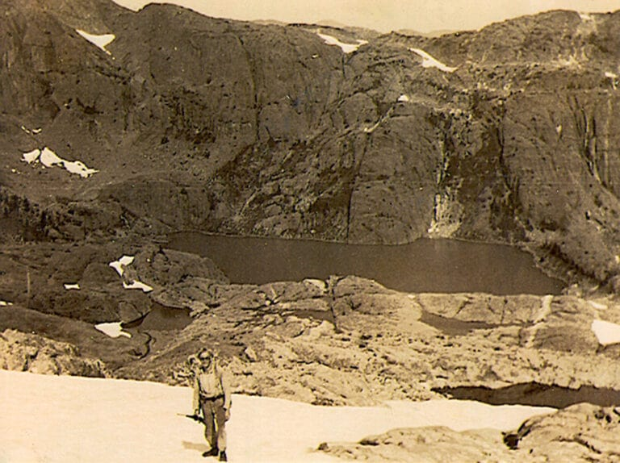

La historio de Dörtstan estas tre juna, la Mt Celeste estis grimpita la unuan fojon nur en 1934, precize la 18an de aŭgusto de Jack Horbury kaj Jock Sutherland. Ilia alfronto komencis de la nordo, ili tiel pasis tra la inkolago, kiel atestas tiu foto de Jock Sutherland prenita apud la lago
Foto provizita de Bill Bell
Post atingi la pinton, la du esploristoj lasis notojn por signali sian pason.


Fotoj provizitaj de Lindsay Elms
Maldekstren "Jack Horbury - Jock Sutherland - Aŭgusto.18.1934 - tra la Mezvojo de Cruikshank - Cruikshank"Tiel ni scias ke ili venis tra la rivero de Cruikshank oriente kaj ili pasis tra la Mezvojo.Je la dato de la 24a de januaro 2018 nia nacio oficiale estis kreita. Kelkajn monatojn poste, la 25a de oktobro, la ŝtato Kanado rekonis nian teritorion kiel rezervejon por la civitanoj de Dörtstan kaj permesis al ni la potencon ekzerci nian jurisdikcion ene de niaj landlimoj. Hodiaŭ niaj landlimoj estas malfermitaj kaj ĉiuj rajtas libere moviĝi kaj ĉiu ajn povas peti por ricevi la dörtstanan civitanecon sendante retpoŝton al dortstan-gouv@proton.me .
Falsa identiga karto
La listo de ĉiuj civitanoj estas havebla -> ĉi tie <-Jen aktualaj fotoj de Dörtstan
Vido de la lago de Memoro de la krusto de Rees sude de la pinto

Vido de la lago de Millia de la Monto Arthur Evans

Celeste-adoranto atingis la pinton